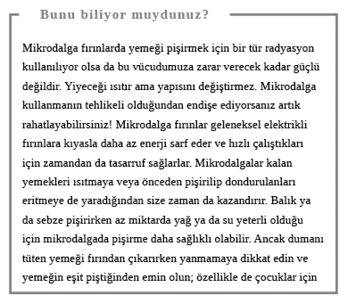
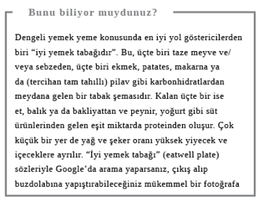
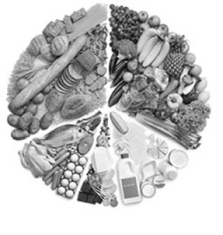
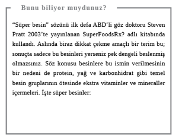
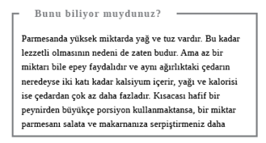
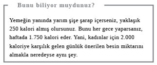
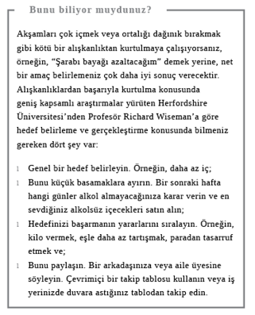
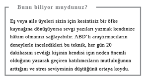

İçeride Geçen Akşamlar
Gün içinde ailenizle sıcak bir yemek yerken hoşbeş edeceğiniz, birkaç işi aradan çıkaracağınız ve tek başınıza keyif aldığınız şeyleri yaparak vakit geçireceğiniz sakin bir akşamı iple çekiyor olabilirsiniz ama gerçekte hiç de böyle şeyler olmaz. Alışveriş ve yemek pişirme tam bir keşmekeşe döner, yapılması gereken işlerle ve televizyon karşısında serilerek geçen saatlerle ilgili tartışmalarsa gündelik yaşamı tam bir drama dönüştürebilir.
Akıl karıştırıcı tercihler arasında en kestirme yolu seçebilmek ve hızlı, basit, besleyici akşam yemekleri hazırlamak, tüm bunların yanında tartışmalardan kaçınıp ev işlerini verimli bir biçimde halletmek yapılamayacak şey değil. Uykusuzluk çekenlere müjdeler olsun ki, iyi bir uyku çekmek de olmayacak şey değil. İşte yolu…
Yemek Alışverişi
Yiyecek fiyatlarının giderek arttığı şu zamanda, haftalık alışverişte ekonomik davranmak büyük bir önem kazanıyor. İşte size hem verimli bir alışveriş hem de sağlıklı tercihler yapmanızı sağlayacak ipuçları.
Organik mi, değil mi?
Organik yanlısı kamp, vücudumuza giren besinlerdeki tarım ilacı kalıntılarıyla ilgili ürkütücü bulguları ustaca kullanırken, bu konu duygusal olmaktan kaçamıyor. Ancak kanıtların resmi bir değerlendirmesi, organik olmayan gıdalarla organik olanlar arasında besleyici özellikler açısından küçük bir fark olduğunu gösterdi. Gıda güvenliği konusunda tedirginseniz, çoğu gıda zehirlenmesi salgınının, besinin kendisindeki kirlenmeden çok, üretim ve ambalajlamadaki hijyenle ilgisi olduğunu bilmek isteyebilirsiniz. Organik kamp, çevre ve hayvan sıhhati konularında daha ikna edici. Bu kamp, endüstriyel tarım yöntemlerinin toprağı ve su kaynaklarını kimyasal ilaçlara ve gübrelere; hayvanları ise ilaçlara ve büyüme hormonlarına daha açık hale getirdiğini söylüyor. Ayrıca organik üretim yöntemlerine geçiş yapan çiftçilerin zamana ve paraya büyük yatırımlar yapmasını destekleyen tüketiciler de var.
Ancak pek çok tüketiciyi caydıran şey fazladan maliyetin artması. Gerçi Organik Ticaret Kurulu süt ürünleri, çay ve kahve, ekmek ve kahvaltılık gevrek gibi birçok temel organik besinin geleneksel yöntemle üretilenlerden daha ucuz olabildiğini gösterdi. Örneğin, büyük süpermarket zincirlerinin birinden kendi ürettikleri organik gıdaları satın almak, daha küçük bir dükkândaki standart markaları almaktan ucuza gelebilir.
Daha fazla organik besin almak istiyorsanız ama bunu sürekli yapmaya maddi gücünüz yetmiyorsa havuç ve süt gibi temel gıdaları organik almayı deneyebilirsiniz çünkü bunlar organik olmayan muadillerinden çok az daha pahalı. Ya da fazladan ödeyebileceğiniz parayı haftada bir defa çok kaliteli organik ete harcayabilir, yemekten kalanı da sonradan tüketebilirsiniz. Maliyet sizi endişelendiriyorsa organik olmayan besinleri satın almaya devam edin.
Yanıt: Organik olmayan

Az yağlı mı, “light” mı?
Gıda etiketlemelerinin sizi nasıl kandırabildiğinin güzel bir örneği. Bir besinin “light” ya da “lite” olduğunun söylenebilmesi için, yağ ya da şeker gibi en azından bir tipik besin değerinin standart ürünlerden yüzde 30 az olması gerekir. Etiket neyin, ne oranda azaltıldığını tam olarak açıklamalı. Örneğin, “light: % 30 daha az yağ”. Söz konusu peynir gibi bol yağlı bir ürünse “light” olan çeşidi bile yüksek miktarda kalori içerebilir. Ayrıca bir markanın “light”ı bir diğerinin standardıyla eşit miktarda yağ veya kalori içerebilir.
“Az” sözü daha az akıl karıştırıcıdır. Bir gıdanın az yağlı olduğunun iddia edilebilmesi için ürünün katı besinde 100 gr başına 3 gr’dan, sıvıda ise 100 ml başına 1,5 gr’dan fazla yağ içermemesi gerekir. “Light” etiketini okumakla uğraşmak istemiyorsanız “az” ibaresini arayın. Ancak üreticilerin genelde lezzeti arttırmak için yağın yerine şeker koyduklarını da unutmayın. Yağlar beslenmede hayati önem taşır. Kalbiniz sağlıklıysa ve kilo vermeniz gerekmiyorsa tam yağlı ürünleri kullanabilirsiniz.
Yanıt: Az yağlı
“Son kullanma tarihi” mi, “Tarihinden önce tüketilmeli” mi?
“Önce Tüketilmeli” etiketi tüketiciye gıdanın (hâlâ güvenle yenebilecek olsa da) artık en iyi durumda olmadığı tarihi göstermeye yarar. “Son kullanım tarihi” etiketi ise tüketiciye gıdanın tüketiminin artık güvenli olmadığı tarihi gösterir (ve daha çok taze besinlerde kullanılır). Resmi sınır böyle olsa da FSA’ya (Food Standards Agency / Gıda Standartları Kurumu) göre insanların ancak yüzde 25’i buna dikkat ediyor. Çoğumuz yiyeceğin iyi olup olmadığını anlamak için gözümüzü ve burnumuzu kullanıyoruz. Küflüyse ya da kokuyorsa muhtemelen çöpe gitmesi gerekiyor. Ancak bu kesinlikle bir tavsiye değil, sadece kişisel bir gözlem.
Yanıt: Son kullanma tarihi

Dondurulmuş mu, soğutulmuş mu?
Soğutulmuş gıdaların nedense dondurulmuşlardan daha sağlıklı olduğu yönünde bir algı mevcut. Oysa asıl mesele ürünün ambalajlanma ve sunum şekli. Dondurucuya istiflenmiş kutular dolusu yiyecek, soğutulmuş muadilleri kadar iştah kabartıcı görünmeyebilir ama soğutulmuş hazır yemekler kimi zaman dondurularak muhafaza edilenlere kıyasla daha fazla katkı maddesi ve kıvam arttırıcı içerir. Örneğin, balık ve bezelye öyle hızla dondurulur ki soğutulmuş olanlara göre çok daha taze ve daha fazla besin maddesi içeriyor olabilir. Üstelik dondurulmuş gıdalar genelde daha ucuzdur. Örneğin, dondurucuda duran lezzetli yaz meyvelerini mevsim dışı ithal edilmiş çileklerle karşılaştırın. Dondurulmuş gıda daha uzun süre dayandığı için tüketilmeden önce bozulup atılma ihtimali daha düşüktür. Love Food Hate Waste (Yemeği Sev İsraftan Nefret) adlı kampanya grubuna göre İngiltere’de her yıl evlerden 8,3 milyon ton yemek atılıyor, ki bunun çocuklu ortalama bir aileye maliyeti yılda 680 sterlin, yani ayda 56 sterlin. Yarattığı çevresel sorunlar da cabası.
Konserve sebze ve meyveye de burun kıvırmayın: Tatlı mısır, fasulye, şeftali ve armut da harika birer erzak dolabı malzemesidir. Ancak meyvelerin şurup içinde değil, meyve suyu içinde olanlarını tercih edin.
Yanıt: Dondurulmuş

Akşam Yemeği Vakti
Akşam yemeği dostlar ve aileyle vakit geçirmek için harika bir fırsattır. Üstelik iyi pişmiş, sağlıklı bir akşam yemeği sizi dışarıda yeme masrafından kurtarıp kalori alımınızı kısıtlı tutar.
Erken mi yemeli, geç mi?
Geç vakitte yemek yendiğinde kalori yakma ihtimalinin daha az olduğunu, bu yüzden de erken yemenin daha iyi olduğunu duymuşsunuzdur. Yapılan birkaç deneme bunun doğru olmadığını gösterdi. Asıl önemli olan ne zaman yediğiniz değil, toplamda ne kadar yediğiniz. Geç saatte yemek yiyenler, gün içinde çok yedikleri için daha kilolu olabiliyor. Ancak uyku uzmanları gece geç saatte ağır yemek yemenin veya fazla alkol içmenin sindirim sorunlarına neden olup uykuyu bozabileceği konusunda uyarıyor.
Yanıt: Erken

Birlikte mi yemeli, ayrı mı?
Aile sofralarının yok oluşu konusunda son zamanlarda çeşitli sıkıntılar dile getirildi. Herkes çalışmakla veya okuldan sonra işlerini yapmakla öyle meşgul ki birlikte sofraya oturmak artık neredeyse imkânsız. Bu elbette ki toplumsal dokumuza ve sağlığımıza zarar veriyor. Bazı sosyal bilimciler aileleriyle birlikte sofrada daha az yemek yiyen gençlerin uyuşturucu kullanımı, sigara ve alkol gibi kötü davranışlara kapılma olasılıklarının daha yüksek olduğuna işaret eden bazı kanıtlar buldular. Ayrıca düzenli olarak aileleriyle yemek yiyen çocukların daha sağlıklı beslendiklerini gösteren kanıtlar da mevcut. İngiltere’de daha sık aile yemeği yeme ile sınavlardan daha iyi not alma arasında da bir bağlantı kuruldu. Ancak eldeki bulgulardan “aile yemeklerinin” gelir ya da toplumsal sınıf gibi başka şeyleri de temsil edip etmediği net değil.
Herkesin beraber sofraya oturup evde pişmiş enfes bir yemek yemesi ve ilginç, eğlenceli sohbetler yapması fikri elbette ki kulağa hoş geliyor. Ne var ki yemeği pişiren kişi stres altındaysa ya da sonunda herkes birbiriyle tartışmaya başlarsa aile yemekleri kâbusa dönüşebilir. Ayrıca bu yemeklerin, spor ve müzik gibi diğer alternatif aktivitelerin avantajlarına karşı dengelenmesi de gerekir.
Yine de pek çok ailenin birlikte vakit geçirmesini engelleyen birbirinden farklı ilgi alanları olduğu düşünülecek olursa, haftada en azından birkaç defa birlikte, uyum içinde yemek yemeye çalışmak fena fikir olmayabilir. Evde pişirme konusunda paniğe kapılmaya gerek yok. Restorandan alınmış veya hazır bir yemek de iş görür. Aile yemeklerinde ne yendiği kadar, olumlu sosyal beceriler edinmek ve birlikte olma fırsatını değerlendirmek de önemlidir.
Yanıt: Birlikte



“İyi yemek tabağı” besin gruplarını nasıl
dengeleyeceğinizi gösterir
Çiğ mi, pişmiş mi?
Çiğ meyve, sebze ve kuruyemiş yemek kulağa “doğal” ve dolayısıyla sağlıklı gelebilir ama şimdilerde moda olan ve pişmiş yemeğe hiç izin vermeyen çiğ yemek diyetine ne demeli? Almanlar’ın yaptığı bir çalışmaya göre çiğ yemek diyeti aşırıya kaçıldığında zararlı olabiliyor. Çiğ yemekler belli birtakım önemli besin maddelerinden yoksun olduğundan, özellikle kalbe zarar verebilir. Çiğ meyve ve sebze çiğ lif açısından zengindir, ki bu da bağırsakları rahatsız ederek utanç verici rüzgârlar yaratabilir. Salata ve meyve elbette ki sağlığa yararlıdır. Kimse kalkıp da fazla pişmiş sebzede besin ya da lezzet kalmadığı fikrine karşı çıkmaz ya da vejetaryen diyetin sağlıksız olduğunu söylemez. Ancak hedef daha çok, çiğ yemeklerle buharda ya da suda hafif haşlanmış, hafif ateşte pişirilmiş yemekler arasında bir denge kurmak olmalıdır.
Kilonuza dikkat ediyorsanız, pişirilmiş meyvelere kaşık kaşık şeker eklemeniz gerekmez; onun yerine biraz portakal veya elma suyu eklemeyi ve tat katmak için tarçın gibi baharatlarla denemeler yapmayı düşünebilirsiniz. Yumurta, kabuklu deniz ürünleri veya et gibi diğer çiğ yiyecekler dikkatle yaklaşılmazsa zararlı olabilir ve gebelere tavsiye edilmez.
Yanıt: Pişmiş
Brokoli mi, ıspanak mı?
Her iki sebze de süper sağlıklı besinler listesinin üst sıralarında yer alır ama evde yemek pişirenler ikisinin arasında bir tercih yapmak zorunda kalırsa hangisini seçmeli? Ispanak, demir, kalsiyum ve folik asitten -sonuncusu fetüsün gelişiminde önemli rol oynar- ayrıca başka birçok vitamin ve besin maddesinden yana zengindir ama faydasını görmeniz için çok yemeniz gerekir. 80 gr pişmiş ıspanak “günde beş tane” porsiyondan birinin yerine geçer. Bu da bir kâse çiğ yaprağa veya aşağı yukarı iki yemek kaşığı dolusu pişmiş ıspanağa denk gelir.
Brokolinin biraz doğranması gerekir, piştiğinde küçülmez, en az ıspanak kadar besleyicidir ve orta ebatta iki baş brokoli, bir porsiyon yerine geçer.
Bu sebzelerin ikisini de suda kaynatmamak daha iyi olacaktır çünkü bu şekilde suda çözünen vitaminleri kısmen yitirebilirler. Onun yerine birkaç dakika buharda haşlayın veya kavurun. Brokoli sevmeyen çocukların fikrini bu sebzeyi dondurma külahı gibi servis ederek değiştirebilirsiniz. Pişmiş bir baş brokoliyi sapıyla birlikte alın, içine bir havuç batırın. Böylece havuç dondurmanın içindeki çikolata parçası gibi görünür, çocuklar da parmaklarını yer.
Yanıt: Brokoli


Domates mi, statinler mi?
Kardiyovasküler hastalıklar bugün dünyadaki ölümlerin en büyük sorumlusu, statinlerse kalp hastalığında bir risk faktörü olan yüksek kolesterolü düşürmeye yardımcı oluyor. Simvastatin isimli bir marka şimdilerde İngiltere’de doktorların en çok verdiği ilaç. Her yıl altı milyon kişi bu ilacı alıyor, düşük dozlu olan çeşidi ise reçetesiz satılıyor. Doktorlar statinlerin, kalp krizi gibi kalple ilgili bir şey yaşayanlarda yeni bir tehlike olasılığını düşürerek işe yaradığı konusunda hemfikir olsalar da, bu tür sorun yaşamamış olanların statinleri alıp almaması konusunda henüz kesin bir görüş birliğine varabilmiş değil. Kullananların küçük bir kısmında ciddi yan etkiler görülebiliyor.
Gazetelerdeki domateste (ve diğer kırmızı sebzelerde) bulunan likopenin de statinler kadar etkili olduğu haberleri bize iyi gibi geldi. Ancak yüksek miktarda likopen, kolesterolü ve kan basıncını düşürebilse de etkisini statinlerle karşılaştıracak uygun denemeler henüz yapılmadı. Bu, çiğ, pişmiş, hatta ketçap içindeki domatesi yemek anlamsızdır demek değil, üstelik tabii ki genel olarak sağlıklı bir beslenme kardiyovasküler hastalık riskini azaltmaya yardımcı olur.
Yanıt: Statinler

Ayçiçek yağı mı, zeytinyağı mı?
Vücudumuz enerji üretmek ve hücre gelişimi gibi önemli bedensel fonksiyonları desteklemek için yağlara ihtiyaç duyar ama bazı yağlar diğerlerinden daha sağlıklıdır. Tekli ve çoklu doymamış yağ içerdiklerinden ve tereyağından daha az (yüksek kolesterolle ve yüksek kalp krizi riskiyle ilişkilendirilen) doymuş yağ oranına sahip olduklarından, hem ayçiçek yağı hem de zeytinyağı sağlıklı yağlar sayılır. Kalori açısından aralarında pek bir fark yoktur ama besleyicilik açısından bazı farklar mevcuttur. Zeytinyağı, kan kolesterolünü düşürmeye yarayan tekli doymamış yağ açısından daha zengindir, ayçiçek yağı ise önemli Omega 3 ve 6 yağ asitlerini içeren çoklu doymamış yağlardan yana zengindir. Ayçiçek yağı ayrıca hücre hasarını, kan pıhtısını önleyen ve bağışıklık sistemini güçlendiren E vitamini açısından da zengindir.
Her ikisini de kullanabilirsiniz. Ayçiçek yağı, yanma noktası daha yüksek olduğundan, kızartma için daha iyidir. Zeytinyağı ise hafif kızartmadan salata sosuna kadar pek çok amaca uygundur. Tek bir çeşit yağ alacaksanız, zeytinyağı daha iyi bir tercih olabilir.
Yanıt: Zeytinyağı

Şarapla mı pişirmeli, et suyuyla mı?
Tencereye bir iki “gluk” şarap eklemek muzırlık gibi görünebilir ama alkolün bir kısmı ve kaloriler pişme sürecinde buharlaşıp gider. Geriye ne kadar kaldığı ise ısıya, pişirme süresine ve alkolün yemeğe ne kadar karıştığına bağlıdır. Boeuf bourguignon gibi ağır pişirilen bir yemek nihayetinde tavada kısaca flambe edilen crêpes Suzette’ten daha az alkol içerir. Yemek hazırlarken azıcık alkol yudumlamayı sevenlerdenseniz, farkında olmadan sandığınızdan fazla içebilirsiniz. Alkol tabii ki yemeğin lezzetine derinlik kazandırır ama aynı şeyi et suyu, otlar, baharatlar, biraz Worcestershire ya da soya sosu ve balsamik sirke de yapar… Hem çok daha da ucuzdurlar.
Yanıt: Et suyuyla

Porsiyonları tartmalı mı, tahmin mi etmeli?
Eski iş arkadaşlarımdan biri, bir defasında hiç diyet ya da spor yapmadan ve açlıktan gözü dönmeden ayda 2,25 kg verdi. Gizli silahı ise yemekleri tarttığı bir tartıydı. Bu kulağa Hollywood divalarına yaraşır, takıntılı bir davranış gibi gelse de uzmanlara göre hep birlikte giderek şişmanlamamızın nedenlerinden biri, son 20 yılda porsiyonlarda meydana gelen muazzam büyüme. Bunun sorumlusu da büyük ölçüde, bize üretim maliyeti düşük, ucuz karbonhidratlar ve yağlarla dolu, seri üretim ürünü, işlenmiş gıdaları sunarak aç gözlülüğümüze yatırım yapan gıda endüstrisi. Örneğin, beslenme uzmanı Amanda Ursell’ın vurguladığı gibi, tipik bir scone (tatlı İskoç çöreği) eskiden 50 gr’dı ve 151 kalori içerirdi ama şimdi kahve zincirlerinde satılanların ağırlığı 190 gr, kalorisi ise 600 gibi dev bir rakam. Evrim biyologları yiyeceğin çok miktarda olmasına direnecek biçimde programlanmadığımızı düşünüyor. Tıpkı beslenebilmek için avlanan ve yiyecek arayan atalarımız gibi biz de bir yemek oradaysa onu mutlaka yiyoruz. Aradaki fark, bugünlerde yiyeceğe direnmenin, yiyecek bulmaktan çok daha zor olması.
Artık birçok üretici, ambalajda “önerilen porsiyon miktarını” belirtiyor olsa da bunlar genelde gram olarak ifade ediliyor. Peki, kaçımız, diyelim ki 80 gr’lık bir porsiyonda kaç gram makarna olduğunu biliyor? Sonuçta iki avuçluk bir miktardan söz ediyoruz. Bahsettiğim -kilolu değil, sadece meraklı- meslektaşım, önerilen porsiyon miktarını nasıl olduğundan fazla algıladığını keşfettiğinde çok şaşırmıştı. Siz de birkaç hafta bu konuda denemeler yapabilirsiniz. Bir süre sonra “doğru” porsiyon miktarını otomatik olarak anlayacaksınız.
Yanıt: Tartmalı

Bir dilim cheesecake mi, peynir ve kraker mi?
Bir yemeğin sonuna gelindiğinde puding ve peynir arasında seçim yapamıyorsanız, kalori açısından kazanan hangisidir? Bilinen süpermarketlerden birinde satılan 100 gr’lık Frenk üzümlü cheesecake 240 kalori içeriyor. Bunun çoğu şekerli karbonhidratlardan ve yağlardan geliyor ve cheesecake, peynirdeki protein ve kalsiyumdan olmak üzere, sadece az miktarda besin maddesi içeriyor.
Canınız peynir ve kraker çekerse çedarın 30 gr’lık kibrit kutusu kadar porsiyonu, çeşidine göre 80-100 kalori içeriyor. Ancak en iyisi keçi peyniri, beyaz peynir ve Brie gibi az yağlı olanları tercih etmek. Yulaf kurabiyesi gibi bir-iki adet tam tahıllı kraker ise 100 kalori sağlıyor. Dolayısıyla peynir ve kraker cheesecake’den daha az kaloriye karşılık geliyor ve daha çok besin maddesi içeriyor. Üstelik krakerin lifli olduğunu da unutmayalım. Yanına birkaç kereviz sapı ve bir avuç üzüm de eklerseniz günde beş porsiyonluk meyve ve sebzenizden birini yemiş olursunuz.
Yanıt: Peynir ve kraker
Satsuma mı, muz mu?
Meyvelerin en sağlıklısı hangisi? Bunu bilmek imkânsız.

Ne de olsa hepsi vitamin, lif ve diğer önemli besin maddelerini farklı miktarlarda içeriyor. Dolayısıyla olabildiğince çok çeşitte ve farklı renklerde besin tüketmeyi öngören “gökkuşağı diyeti” bunu boşuna önermiyor. Ancak meyve şeker içerir, bu yüzden de kalorisiz değildir. Günde mideye üç muz indirirseniz, jambonlu domatesli bir sandviçten daha fazla kalori ama daha az besin maddesi almış olursunuz çünkü sağlıklı bir sandviçin protein, vitamin ve karbonhidrat dengesi daha iyidir. weightlossresources.com’un verdiği bilgiye göre aşağıdaki liste her meyvenin 100 gramında bulunan kalori miktarını gösteriyor. 100 gr ise kabaca bir muzun ya da orta boy bir elmanın ağırlığına karşılık geliyor.
satsuma 25,6
çilek 27,6
karpuz 29,5
armut 34,7
elma 47,5
kivi 49
üzüm 61,5
portakal 62,1
muz 95
Yanıt: Satsuma
Ev Hayatı
Evi derli toplu tutmaktan, hane içi gerilimi minimuma indirmeye dek uzanan ev idaresi işi hiç de kolay değildir. Ancak hem vaktinizi verimli kullanmanızı hem de sağlam ve mutlu bir geminin dümenini idare etmenizi sağlayacak bazı harika yöntemler mevcut.
Ev işi yapmalı mı, başkasını mı tutmalı?
Ev işini kendiniz yapmanız için pek çok iyi neden mevcut. Birincisi bu aktif olmanızı sağlar. 30 dakikalık bir nevresim değiştirme işi insana yaklaşık 80 kalori, yer ovma yaklaşık 120 kalori, elektrikli süpürge ise yaklaşık 110 kalori harcatır. Diğer bir deyişle, bir iki saat ev işi yaparsanız, neredeyse 400 kalori yakarsınız. Akıl yormayan bu tür işler hayli dinlendirici olabilir; özellikle de çalışma hayatınızla tezat teşkil ediyorsa.
Öte yandan, gergin ve bitkinseniz, temiz ve düzenli bir eve gelmek gibisi yoktur; tabii maddi gücünüz elveriyorsa. Sonuçta aktifleşmenin daha keyifli yolları da vardır. Dışarıda yapılan ve tabiata yakın olmanın getirdiği, araştırmalarla kanıtlanmış tüm o yararları içeren spor da bunlardan biridir. Spor temizlikten daha sosyalleştirici bir aktivitedir ve pek çok kanıt da yanınızda motivasyonunuzu arttıran biri olduğunda spora devam etme olasılığınızın daha yüksek olduğunu gösterir. Dostlar ve yeşil alanlar bedava ne de olsa. Kısacası maddi durumunuz elveriyorsa neden temizliğin parasını ödeyip daha keyifli bir biçimde egzersiz yapmayasınız ki?
Yanıt: Başkasını tutmalı

30 derecede mi yıkamalı, 60 derecede mi?
“Çevre dostu” kampanyalar son zamanlarda insanları enerjiden ve paradan tasarruf sağlamak için, giysileri 40 derece yerine 30 derecede yıkamaya teşvik ediyor. Peki ya, hem sizin hem de çamaşır makinenizin sağlık ve hijyenine ne demeli? Astım gibi alerjileriniz veya kılkurdu gibi enfeksiyonlarınız varsa mikropları ya da ev tozu akarlarını ve onların yumurtalarını öldürmek için yatak nevresimlerini, havluları, mendilleri ve iç çamaşırlarını 60 derecede yıkamanız önerilir. Ev tozu akarları nemli, sıcak ortamları çok sever ama günışığında kolayca ölür. Yani çamaşırlarınızı dışarıda kurutmanız daha iyidir. NHS’in İngiltere’de hastane yastıklarıyla ilgili yürüttüğü bir araştırmada, yastıkların ağırlığının üçte birini ev tozu akarlarının, akar dışkılarının, ölü derinin, bakterilerin ve salyanın oluştuğu ortaya çıktı. Araştırma yastık paylaşmanın enfeksiyon yaydığını tam olarak söylemese bile sentetik yastıkların sanıldığı gibi, tüylü yastıklardan daha sağlıklı olmadığını ortaya koydu. Bunun nedeni ise kuş tüyü yastıklarda kullanılan kumaşın, tüylerin kaçmasını önlemek için daha sıkı dokunmuş olması ve bunun da daha etkili bir bariyer sağlamasıydı. Sadece kılıfları değil yastıkları sık sık yıkayın ya da değiştirin. Gerçi New York’taki Ritz Carlton Hotel kadar ileri gitmeniz şart değil. The Times’a göre onlar iri kaz tüyü yastıklar kullanıyor ve bunları ayda bir değiştiriyorlar.
Çamaşırları arada bir 70 derecede yıkamak, makinenizi temiz ve artıklardan arınmış tutacaktır. Sürekli düşük derecede yıkamak kauçuk kapak kayışında küf ve bakteri üremesine yol açar. Bu kayış da zaman zaman sert olmayan bir deterjanla veya beyaz sirke solüsyonuyla temizlenmeli. Küf birikimini azaltmak için makinenin kapağı daima aralık bırakılmalı. Gündelik yıkamalarda düşük derecelerin bir zararı olmaz ama sizin ve makinenizin sağlığını korumak için arada bir sıcak yıkama yapmanız şarttır.
Yanıt: 60 derecede (arada bir)
Televizyon mu seyretmeli, bilgisayar oyunu mu oynamalı?
Ocak 2010 tarihli medya raporları büyük heyecan uyandırdı. Raporlara göre Circulation dergisinde yeni yayınlanan bir çalışma, TV izlemenin erken ölme olasılığını arttırdığını gösteriyordu. Ancak kalp krizinden ve diğer nedenlerden kaynaklanan ölüm oranındaki mütevazı artış, özel olarak televizyon seyretmekten çok, genel olarak hareketsiz yaşamakla ilgili. Buna, Wii ve Xbox’la oynanan aktif oyunlar dışında, bilgisayar oyunları da dâhil. Ne var ki yazar ve oyun tasarımcısı Jane McGonigal da dâhil pek çok uzman, video oyunlarının bizim için olumlu yönleri olduğunu öne sürüyor. McGonigal’a göre oyunlar zor şeyleri mümkün gibi göstererek iyimserliğimizi arttırıyor, merakımızı uyandırıyor, aktif katılımımızı sağlıyor ve bizde bir huşu ve hayret duygusu yaratıyor. Oyunların çoğu sosyal oyunlar ve arkadaşları, yabancıları ortak bir amaç uğruna birleştirebiliyor. Tüm bunları televizyon seyrederek elde etmek mümkün değil. Doktora eğitimi de almış olan McGonigal, hafif bir beyin hasarından kaynaklanan sarsıntı yaşarken, iyileşmesine yardımcı olacak bir bilgisayar oyunu bile geliştirmiş. Yüzlerce insan Superbetter isimli bu oyunu hastalıkla başetmelerine ve iyileşmelerine yardımcı olması için kullanıyor (gençler ve bilgisayarlar konusunda daha fazla bilgi için, bkz. Çocuklar).
Yanıt: Bilgisayar oyunu


Ağız dalaşına mı girmeli, susmalı mı?
Uzun ve yorucu bir gün geçirdiyseniz ve tek istediğiniz şöyle biraz gevşemekse evde canınızı sıkan şeyler bunun tam tersi bir etki yaratabilir. Örneğin, sütü son damlasına kadar içen ya da çöpü dışarı çıkarmayan bir eş, giysilerini ve çantalarını yere atan çocuklar… Öfke konusunda genel kanı “içinde patlamaktansa dışında patlasın” şeklindedir ama 50 Great Myths of Popular Psychology / Popüler Psikolojide 50 Büyük Mit adlı kitabın her biri psikoloji profesörü olan yazarları, sinirlenmenin bizi daha da sinirli kıldığını, giderek şiddetlenen bir tartışma riski doğurduğunu ileri sürüyor. Öfke, diyorlar, ancak beraberinde kaynağa yönelik yapıcı bir çözüm planı varsa işe yarar. Kırgınlığı sakin ve olumlu bir biçimde ifade etmek daha iyidir. “Kasten yapmadığını biliyorum ama bir şeyi bitirip de yenisini almayı unutman beni rahatsız ediyor. İstersen mutfakta bir alışveriş listesi tutalım, sen de bir şey bittiğinde o listeye ekle?”
Yanıt: Susmalı

